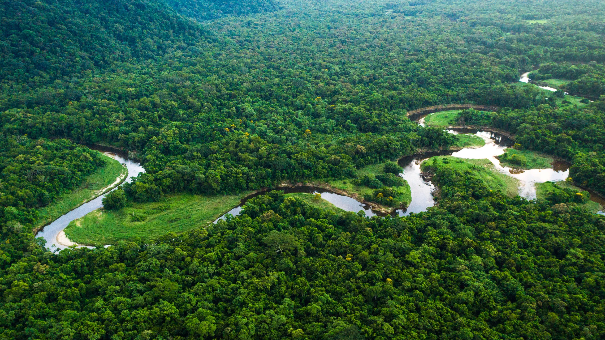

Az esőerdők elhelyezkedése és kialakulása
Hol találhatók az esőerdők?
Az esőerdők a Föld legmelegebb és legcsapadékosabb területein találhatók. Legnagyobb részük az Egyenlítő közelében, a trópusi övezetben helyezkedik el, ahol egész évben magas a hőmérséklet, és bőséges a csapadék.
A legismertebb és legnagyobb kiterjedésű trópusi esőerdő a dél-amerikai Amazonas-medencében található, amely több ország területére is kiterjed. Jelentős esőerdők találhatók még Közép-Afrikában, a Kongó-medencében, valamint Délkelet-Ázsiában, például Indonéziában és Malajziában. Kisebb területeken Közép-Amerikában, Új-Guineában és Ausztrália északkeleti részén is előfordulnak.
Nem minden esőerdő található a trópusokon. A mérsékelt övi esőerdők például Észak-Amerika északnyugati partvidékén, Dél-Amerika déli részén, valamint Új-Zéland egyes területein is megtalálhatók. Ezeken a vidékeken a hűvösebb éghajlat ellenére a nagy mennyiségű csapadék és a megfelelő környezeti feltételek lehetővé teszik a sűrű erdők kialakulását.

Hogyan alakultak ki az esőerdők?
Az esőerdők kialakulása hosszú földtörténeti folyamat eredménye. A meleg, nedves éghajlat kedvezett a növények növekedésének és elterjedésének. Az Egyenlítő környékén a napsugarak egész évben nagy szögben érik a felszínt, ezért a hőmérséklet kevéssé változik az évszakok során. A meleg levegő felemelkedik, lehűl, majd a benne lévő vízgőz kicsapódik, így gyakran alakulnak ki heves záporok és zivatarok. Ez biztosítja a növényzet fejlődéséhez szükséges vízmennyiséget.
Az esőerdők fejlődésében a víz körforgása is fontos szerepet játszik. A fák a gyökereiken keresztül vizet vesznek fel a talajból, amelynek egy részét leveleiken keresztül a levegőbe juttatják. Ezt a folyamatot párologtatásnak nevezzük. A levegőbe kerülő vízgőz hozzájárul a felhők kialakulásához és a csapadék mennyiségéhez, így az erdők saját környezetük nedvességének fenntartásában is részt vesznek.
Az évezredek és évmilliók során a megfelelő éghajlati viszonyok, a növények alkalmazkodása és az élőlények közötti kölcsönhatások rendkívül összetett ökoszisztémákat hoztak létre. A különböző növény- és állatfajok egymáshoz alkalmazkodva fejlődtek, ennek köszönhetően alakult ki az esőerdőkre jellemző rendkívüli fajgazdagság.

Az esőerdők éghajlata és növényzete
A trópusi esőerdők éghajlatára az egész évben magas, általában 25–28 °C körüli átlaghőmérséklet és a nagy mennyiségű csapadék jellemző. Sok területen évente több mint 2000 milliméter eső hullik. Az évszakok közötti hőmérséklet-különbség kicsi, ezért a növények többsége egész évben növekedhet. Az örökzöld fák nem hullatják le egyszerre a leveleiket, így az erdő folyamatosan zöld marad.
Az esőerdők növényzete több szintre tagolódik. A legmagasabb fák koronái kiemelkednek az erdő többi része fölé, alattuk pedig összefüggő lombkoronaszint alakul ki. Ez alatt kisebb fák, cserjék, páfrányok és más árnyékkedvelő növények élnek.
A talaj közelében viszonylag kevés fény jut el a növényekhez, mivel a sűrű lombkorona felfogja a napsugarak nagy részét. Sok növény kúszónövényként vagy más fákra telepedve próbál több fényhez jutni.
Miért fontosak az esőerdők?
Az esőerdők nélkülözhetetlen szerepet töltenek be a Föld természetes rendszereiben. A növények fotoszintézis során szén-dioxidot vesznek fel, és oxigént bocsátanak ki, miközben a szén egy részét a növényi biomasszában tárolják. Az erdők emellett befolyásolják a víz körforgását, segítik a talaj védelmét, és élőhelyet biztosítanak a bolygó szárazföldi fajainak jelentős része számára.
Az esőerdők ugyanakkor egyre nagyobb veszélynek vannak kitéve. A mezőgazdasági területek kialakítása, az állattenyésztés, a fakitermelés, a bányászat és az infrastruktúra terjeszkedése miatt hatalmas erdőterületeket pusztítanak el.
Az erdők eltűnése nemcsak az ott élő növényeket és állatokat veszélyezteti, hanem a globális éghajlatra is hatással van. Megóvásuk ezért kiemelten fontos a biológiai sokféleség fenntartása és a jövő generációinak .